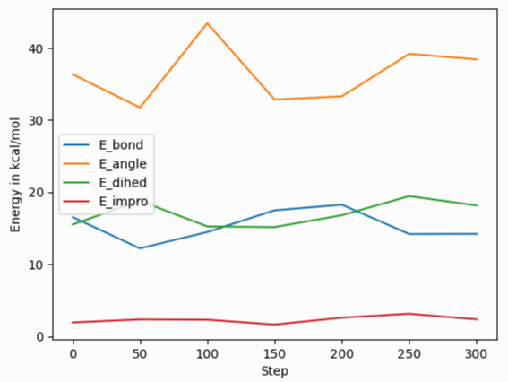

\(\renewcommand{\AA}{\text{Å}}\)
10.3.2. Output structured data from LAMMPS
LAMMPS can output structured data with the print and fix print command. This gives you flexibility since you can build custom data formats that contain system properties, thermo data, and variables values. This output can be directed to the screen and/or to a file for post processing.
Writing the current system state, thermo data, variable values
Use the print command to output the current system state, which can include system properties, thermo data and variable values.
YAML
print """---
timestep: $(step)
pe: $(pe)
ke: $(ke)
...""" file current_state.yaml screen no
---
timestep: 250
pe: -4.7774327356321810711
ke: 2.4962152903997174569
JSON
print """{
"timestep": $(step),
"pe": $(pe),
"ke": $(ke)
}""" file current_state.json screen no
{
"timestep": 250,
"pe": -4.7774327356321810711,
"ke": 2.4962152903997174569
}
YAML format thermo_style or dump_style output
Extracting data from log file
Added in version 24Mar2022.
LAMMPS supports the thermo style “yaml” and for “custom” style thermodynamic output the format can be changed to YAML with thermo_modify line yaml. This will produce a block of output in a compact YAML format - one “document” per run - of the following style:
---
keywords: ['Step', 'Temp', 'E_pair', 'E_mol', 'TotEng', 'Press', ]
data:
- [100, 0.757453103239935, -5.7585054860159, 0, -4.62236133677021, 0.207261053624721, ]
- [110, 0.759322359337036, -5.7614668389562, 0, -4.62251889318624, 0.194314975399602, ]
- [120, 0.759372342462676, -5.76149365656489, 0, -4.62247073844943, 0.191600048851267, ]
- [130, 0.756833027516501, -5.75777334823494, 0, -4.62255928350835, 0.208792327853067, ]
...
This data can be extracted and parsed from a log file using python with:
import re, yaml
try:
from yaml import CSafeLoader as Loader
except ImportError:
from yaml import SafeLoader as Loader
docs = ""
with open("log.lammps") as f:
for line in f:
m = re.search(r"^(keywords:.*$|data:$|---$|\.\.\.$| - \[.*\]$)", line)
if m: docs += m.group(0) + '\n'
thermo = list(yaml.load_all(docs, Loader=Loader))
print("Number of runs: ", len(thermo))
print(thermo[1]['keywords'][4], ' = ', thermo[1]['data'][2][4])
After loading the YAML data, thermo is a list containing a dictionary for each “run” where the tag “keywords” maps to the list of thermo header strings and the tag “data” has a list of lists where the outer list represents the lines of output and the inner list the values of the columns matching the header keywords for that step. The second print() command for example will print the header string for the fifth keyword of the second run and the corresponding value for the third output line of that run:
Number of runs: 2
TotEng = -4.62140097780047
Extracting data from dump file
Added in version 4May2022.
YAML format output has been added to multiple commands in LAMMPS, for example dump yaml or fix ave/time Depending on the kind of data being written, organization of the data or the specific syntax used may change, but the principles are very similar and all files should be readable with a suitable YAML parser. A simple example for this is given below:
import yaml
try:
from yaml import CSafeLoader as YamlLoader
except ImportError:
from yaml import SafeLoader as YamlLoader
timesteps = []
with open("dump.yaml", "r") as f:
data = yaml.load_all(f, Loader=YamlLoader)
for d in data:
print('Processing timestep %d' % d['timestep'])
timesteps.append(d)
print('Read %d timesteps from yaml dump' % len(timesteps))
print('Second timestep: ', timesteps[1]['timestep'])
print('Box info: x: ' , timesteps[1]['box'][0], ' y:', timesteps[1]['box'][1], ' z:',timesteps[1]['box'][2])
print('First 5 per-atom columns: ', timesteps[1]['keywords'][0:5])
print('Corresponding 10th atom data: ', timesteps[1]['data'][9][0:5])
The corresponding output for a YAML dump command added to the “melt” example is:
Processing timestep 0
Processing timestep 50
Processing timestep 100
Processing timestep 150
Processing timestep 200
Processing timestep 250
Read 6 timesteps from yaml dump
Second timestep: 50
Box info: x: [0, 16.795961913825074] y: [0, 16.795961913825074] z: [0, 16.795961913825074]
First 5 per-atom columns: ['id', 'type', 'x', 'y', 'z']
Corresponding 10th atom data: [10, 1, 4.43828, 0.968481, 0.108555]
Processing scalar data with Python

After reading and parsing the YAML format data, it can be easily imported for further processing and visualization with the pandas and matplotlib Python modules. Because of the organization of the data in the YAML format thermo output, it needs to be told to process only the ‘data’ part of the imported data to create a pandas data frame, and one needs to set the column names from the ‘keywords’ entry. The following Python script code example demonstrates this, and creates the image shown on the right of a simple plot of various bonded energy contributions versus the timestep from a run of the ‘peptide’ example input after changing the thermo style to ‘yaml’. The properties to be used for x and y values can be conveniently selected through the keywords. Please note that those keywords can be changed to custom strings with the thermo_modify colname command.
import re, yaml
import pandas as pd
import matplotlib.pyplot as plt
try:
from yaml import CSafeLoader as Loader
except ImportError:
from yaml import SafeLoader as Loader
docs = ""
with open("log.lammps") as f:
for line in f:
m = re.search(r"^(keywords:.*$|data:$|---$|\.\.\.$| - \[.*\]$)", line)
if m: docs += m.group(0) + '\n'
thermo = list(yaml.load_all(docs, Loader=Loader))
df = pd.DataFrame(data=thermo[0]['data'], columns=thermo[0]['keywords'])
fig = df.plot(x='Step', y=['E_bond', 'E_angle', 'E_dihed', 'E_impro'], ylabel='Energy in kcal/mol')
plt.savefig('thermo_bondeng.png')
Processing vector data with Python
Global vector data as produced by fix ave/time uses a slightly different organization of the data. You still have the dictionary keys ‘keywords’ and ‘data’ for the column headers and the data. But the data is a dictionary indexed by the time step and for each step there are multiple rows of values each with a list of the averaged properties. This requires a slightly different processing, since the entire data cannot be directly imported into a single pandas DataFrame class instance. The following Python script example demonstrates how to read such data. The result will combine the data for the different steps into one large “multi-index” table. The pandas IndexSlice class can then be used to select data from this combined data frame.
import yaml
import pandas as pd
try:
from yaml import CSafeLoader as Loader
except ImportError:
from yaml import SafeLoader as Loader
with open("ave.yaml") as f:
ave = yaml.load(f, Loader=Loader)
keys = ave['keywords']
df = {}
for k in ave['data'].keys():
df[k] = pd.DataFrame(data=ave['data'][k], columns=keys)
# create multi-index data frame
df = pd.concat(df)
# output only the first 3 value for steps 200 to 300 of the column Pressure
idx = pd.IndexSlice
print(df['Pressure'].loc[idx[200:300, 0:2]])
Processing scalar data with Perl
The ease of processing YAML data is not limited to Python. Here is an example for extracting and processing a LAMMPS log file with Perl instead.
use YAML::XS;
open(LOG, "log.lammps") or die("could not open log.lammps: $!");
my $file = "";
while(my $line = <LOG>) {
if ($line =~ /^(keywords:.*$|data:$|---$|\.\.\.$| - \[.*\]$)/) {
$file .= $line;
}
}
close(LOG);
# convert YAML to perl as nested hash and array references
my $thermo = Load $file;
# convert references to real arrays
my @keywords = @{$thermo->{'keywords'}};
my @data = @{$thermo->{'data'}};
# print first two columns
print("$keywords[0] $keywords[1]\n");
foreach (@data) {
print("${$_}[0] ${$_}[1]\n");
}
Writing continuous data during a simulation
The fix print command allows you to output an arbitrary string at defined times during a simulation run.
YAML
fix extra all print 50 """
- timestep: $(step)
pe: $(pe)
ke: $(ke)""" file output.yaml screen no
# Fix print output for fix extra
- timestep: 0
pe: -6.77336805325924729
ke: 4.4988750000000026219
- timestep: 50
pe: -4.8082494418323200591
ke: 2.5257981827119797558
- timestep: 100
pe: -4.7875608875581505686
ke: 2.5062598821985102582
- timestep: 150
pe: -4.7471033686005483787
ke: 2.466095925545450207
- timestep: 200
pe: -4.7509052858544134068
ke: 2.4701136792591693592
- timestep: 250
pe: -4.7774327356321810711
ke: 2.4962152903997174569
Post-processing of YAML files can be easily be done with Python and other scripting languages. In case of Python the yaml package allows you to load the data files and obtain a list of dictionaries.
import yaml
with open("output.yaml") as f:
data = yaml.load(f, Loader=yaml.FullLoader)
print(data)
[{'timestep': 0, 'pe': -6.773368053259247, 'ke': 4.498875000000003},
{'timestep': 50, 'pe': -4.80824944183232, 'ke': 2.5257981827119798},
{'timestep': 100, 'pe': -4.787560887558151, 'ke': 2.5062598821985103},
{'timestep': 150, 'pe': -4.747103368600548, 'ke': 2.46609592554545},
{'timestep': 200, 'pe': -4.750905285854413, 'ke': 2.4701136792591694},
{'timestep': 250, 'pe': -4.777432735632181, 'ke': 2.4962152903997175}]
Line Delimited JSON (LD-JSON)
The JSON format itself is very strict when it comes to delimiters. For continuous output/streaming data it is beneficial use the line delimited JSON format. Each line represents one JSON object.
fix extra all print 50 """{"timestep": $(step), "pe": $(pe), "ke": $(ke)}""" &
title "" file output.json screen no
{"timestep": 0, "pe": -6.77336805325924729, "ke": 4.4988750000000026219}
{"timestep": 50, "pe": -4.8082494418323200591, "ke": 2.5257981827119797558}
{"timestep": 100, "pe": -4.7875608875581505686, "ke": 2.5062598821985102582}
{"timestep": 150, "pe": -4.7471033686005483787, "ke": 2.466095925545450207}
{"timestep": 200, "pe": -4.7509052858544134068, "ke": 2.4701136792591693592}
{"timestep": 250, "pe": -4.7774327356321810711, "ke": 2.4962152903997174569}
One simple way to load this data into a Python script is to use the pandas package. It can directly load these files into a data frame:
import pandas as pd
data = pd.read_json('output.json', lines=True)
print(data)
timestep pe ke
0 0 -6.773368 4.498875
1 50 -4.808249 2.525798
2 100 -4.787561 2.506260
3 150 -4.747103 2.466096
4 200 -4.750905 2.470114
5 250 -4.777433 2.496215